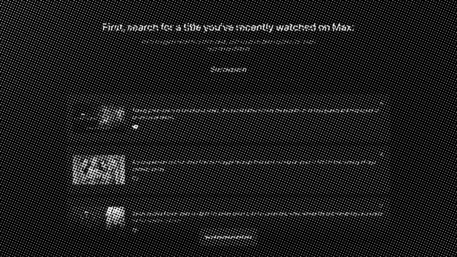
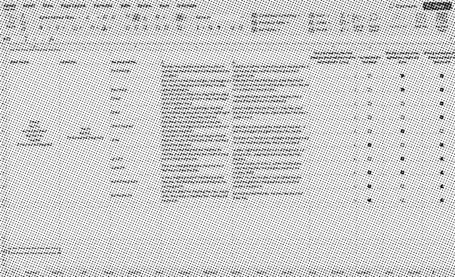

A synopsis tells you what a title is. It never tells you why it is for you. Reasons to Watch replaces the synopsis with a 135-character pitch written for one viewer — and the interesting part was never the model. It was deciding what the system was allowed to claim.
Both strings are real, straight out of the POC. The personalized one is written for a viewer who liked The Righteous Gemstones — and it is the shorter of the two.
Reasons to Watch appears when a viewer focuses on a title. Instead of repeating the synopsis, it argues for the title. Internal research had already shown the pattern helped: it lifted clarity around why something was being recommended by 4%.
The scalable version of that idea assigned every viewer to one of 17 affinity groups and wrote one piece of copy per group. It was practical for cost and for a catalog this size. It also flattened taste. The same person can want a prestige drama, a competitive cooking show and a comfort sitcom in one week, for three completely unrelated reasons.
From Julian Fellowes, this sprawling period drama chronicles the great conflict between old and new in New York's glittering Gilded Age.
A gripping portrayal of wealth, power, and the societal change in old New York through the lens of layered, elite families.
Ambitious women navigate intricate relationships and societal pressures in a fiercely stratified 19th-century New York.
Witness the sweeping transformation of New York through the eyes of powerful families during a dramatic social upheaval.
The brief I set myself: write for one viewer rather than their segment, without breaking the 135-character limit, Max's voice, or the spoiler rules.

Two signals were available, and they are not interchangeable. Watch history is broad and behavioral — it shows what someone puts on. Explicit likes are narrow and endorsed — they show what someone would defend. The first model I built used history alone, and it name-dropped titles a viewer had merely watched, sometimes titles they had abandoned halfway.
That version tested worse than the generic copy. Not because the writing was weaker, but because a wrong name-drop is louder than no name-drop. It reads as a system claiming to know you and getting it wrong.
So: history infers the pattern, likes earn the reference. A previous title may be named only when the analyst scores the connection above 85 — a specific, defensible link, not "both are dramas."
Personalization was never the name-drop. It was the explanation of fit.

The first prompts produced accurate plot summaries. They described the title correctly and gave no one a reason to choose it. I reframed the task three times before it landed — each reframing was a real rewrite of the brief, not a wording tweak.
The threshold is a dial, not a law. Set it lower and the copy references familiar titles constantly and cheapens them; set it higher and it almost never earns one. 85 was where the references stopped feeling automatic in my test set.
A single prompt had to research the title, infer taste, write the copy, enforce the product rules and judge its own work. The output stayed generic and quietly missed specifications, and when it failed there was no way to tell which job had failed.
Splitting the work was not about accuracy. It was about diagnosis. Once each stage returned a structured handoff, a weak sentence had an address: a bad connection is an analysis problem, flat language is a writing problem, a broken character count is an editing problem. Each one gets tuned without disturbing the others.
Builds a picture of the viewer from how they actually watch, then finds the one connection it can defend.
You are a pattern analysis assistant for a personalized TV/movie blurb writer. Your job is to infer what types of content the user consistently enjoys, understand why they watch.
Writes the 135-character pitch, in the mood the viewer already reaches for.
You are a friend who is really good at making recommendations. Based on the user's emotional taste and past favorites, craft a compelling 135-character recommendation for a show or film that fits their vibe.
Brings the draft inside the product rules, and changes nothing else.
You are a professional TV blurb editor. Your job is to make minor edits to the 135-character blurb to meet the rules. Do NOT make any other changes. If the blurb is already good, leave it as is.
Scores the three candidates and picks the one worth shipping.
You are a professional TV blurb critic. Each blurb should be scored from 1 (lowest) to 5 (highest) on creativity and informativeness. If two are close, use creativity as a tiebreaker.
Step through a real run for Succession, written for a viewer who liked The Righteous Gemstones.
This walkthrough is a recorded run, replayed deterministically. A live one is at the end of the page.
Most of what makes the copy sound like Max lives in one agent. These are product rules, not style preferences — several exist because legal or brand would reject the alternative, and every one of them started as something the model kept doing wrong.
That last exception is the one I point at when someone asks whether the rules are real. The pitch for Selena + Chef ends "…all her sassy, competitive fire in a delicious 20-minute duel." The word survives editing because the show is about cooking. A rule with a working exception is a spec; a rule without one is a filter.
Everything above could be true and the feature could still not be worth shipping. Personalized copy will always beat generic copy when the reader knows which is which. The only honest question was whether it beat the default when nobody knew which was which.
I worked with design technologist Travis Swan to build an internal evaluation tool. Participants entered their own watched and liked titles, then compared default copy against generated copy blind. After each choice the tool asked why — plot and theme balance, a familiar connection, attention, or a sense that the writer understood the title.
From Julian Fellowes, this sprawling period drama chronicles the great conflict between old and new in New York's glittering Gilded Age.
Glamorous old vs. new money drama. Its character depth and social navigation echo Succession 's power plays, offering a compelling historical clash.
The real tool asked why before revealing either source. That order matters: reasons given after the reveal are rationalisations.
The tool took weeks to build, and I did not want to wait weeks for signal. While it was in development I ran the same comparison asynchronously in a spreadsheet — uglier, slower to analyze, and it answered the question a month earlier.
Talented chefs battle for the chance to take down Chef Bobby Flay.
As if Monica Geller from Friends got her own cooking show. All her sassy, competitive fire in a delicious 20-minute duel.
A bitingly funny drama series exploring themes of power and family through the eyes of an aging media mogul and his four grown children.
Love the chaos of The Righteous Gemstones ? Its corporate cousin is a vicious fight for Daddy's love where the jokes cut like glass.
The creators of Game of Thrones bring another epic series of power, politics, and family feuds. It's Succession with dragons.
The agent guide keeps every rejected phrasing, because each one failed for a reason worth remembering.
Qualitative feedback landed on three strengths, consistently: the copy matched a mood the viewer was already seeking, it was genuinely enjoyable to read, and the connection to a past favorite made the recommendation easier to believe. The work went on to inform the team's exploration of personalized copy in single-content promotions.
This was an internal POC measuring copy preference and perceived relevance. It did not establish that personalized Reasons to Watch increase playback, shorten time to selection, or improve retention. Preference is not behavior, and I would not present it as such.
If it shipped, three metrics would settle it. I would build them with engineering before launch rather than after, since none of them can be reconstructed from a copy test.
The third is the one I would watch hardest: the share of sessions that end without playback. It is the inverse of the first, and it is the only one that catches a reason that persuades someone to open a title and then disappoints them.
AI did not make the copy personal. The system did. Better output came from better product decisions: choosing signals I could defend, separating failure modes so each had one owner, writing the constraints down, and refusing to evaluate the result without hiding where it came from. The model supplied the language. The system supplied the judgment.